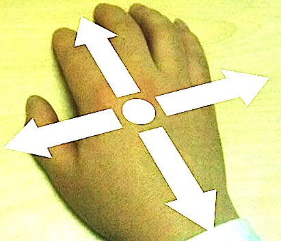

Jazz hands is a JavaScript library for simplifed single-hand use of the LEAP motion controller.
https://github.com/troygdaniel/jazzhands
 Find "neutral" by keeping your hand flat and over the center of the controller.
Find "neutral" by keeping your hand flat and over the center of the controller.
To continue, please place your hand to the right of the controller.
A simple application can replace the physical mouse for a hands-free presentation.
To ensure comfort of prolonged use, try and keep your hand below your heart (unlike this example).
To continue, move the hand right.
For the previous slide, move the hand left.
Partnered with interesting libraries like impressjs, there's so much more opportunity for fun.

Pull your hand towards your chest to "Zoom out" to the Table of Contents.
Hint: You can do this at any time.
That's it! Simple.
Move your hand up for the Intro.
Move your hand down to see
Code.
The simplest implementation just requires an init() and Jazz.on("navigation") binding.
Jazz.init()
Jazz.on('navigation', function(n) {
console.log(n);
});
Other options include:
fillStyle - Color of the navigation circle
fingerWaitTimer - Milliseconds event timer
fingersHoverText - Text to display on fingers held
disableZoom - Set to true/false to disable Zooming
Jazz.init({
fillStyle: "black",
enableHelperArrows: true,
fingersHoverText: ["One finger", "Two fingers!?"],
fingerWaitTimer: 600,
disableZoom: false
});
You also can capture other events:
// n = left, right, up, down, zoomIn, zoomOut
Jazz.on("navigation", function(n) { console.log(n); });
// f = 1,2,3,4
Jazz.on("fingers", function (f) { console.log(f); });
// g = CircleGesture, KeyTapGesture, ScreenTapGesture
Jazz.on("gestures", function (g) { console.log(g); });
// f = raw "frame" events from leap.js framework
Jazz.on("frames", function (f) { console.log(f); });